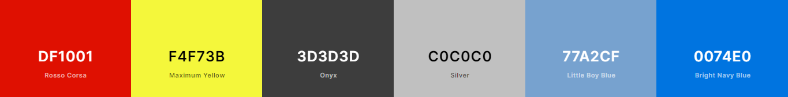

Color Scheme

| Applications | Background/Color | Name of Color | Hex Code |
|---|---|---|---|
| Header and Footer | background-color | Bright Navy Blue | #0074E0 |
| Font | color | Silver and Onyx | #3D3D3D #C0C0C0 |
| Hover and Visiter | color, background color | Rasso Corsa, Maximum Yellow | #DF1001 #F4F73B |